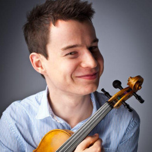

Cameron Jamieson
Next concert: Memories and Music from WWI
Sunday 26th April, 2:30pm
Clocktower Centre, 750 Mt Alexander Rd, Moonee Ponds VIC 3039
This commemorative concert marks the centenary since World War I, and is full of luscious and moving music. We are also very fortunate to have Cameron Jamieson return to perform with us so soon again after wowing us during the Bruch Violin Concerto last year.
Cameron Jamieson graduated in 2011 from the Queensland Conservatorium of Music with a Bachelor of Music in Advanced Violin Performance completing extensive studies with Michele Walsh. In 2012, Cameron moved to Melbourne to further his studies at the Australian National Academy of Music, with William Hennessy, and to work with the Melbourne Symphony Orchestra. His highlights include the MSO's re-opening of Hamer Hall with Mahler's Third symphony, premiering Paul Dean's Clarinet Quintet for Dame Elizabeth Murdoch, directing the ANAM orchestra for a piano concerto with Paavali Jumppanen, and the opening night of Quartetthaus.
The concert will include:
- Suppe - Light Cavalry Overture
- Sculthorpe - Small Town
- Vaughan Williams - The Lark Ascending (featuring Cameron Jamieson)
- Elgar - Enigma Variations

{kind=link}